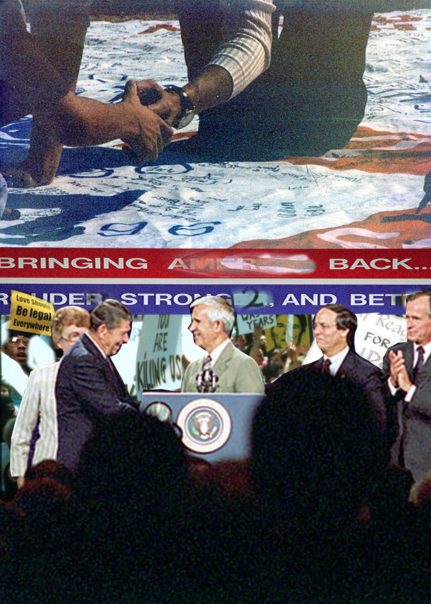

Paragraph 1: The message in this photo describes the lack of government and executive action during the AIDS crisis. President Regan neglected millions of Americans' needs by stigmatizing the disease as an exclusively homosexual contracted disease. This shows how powerful stigma and governing powers can discriminate against marginalized communities.
Paragraph 2: I wanted the main picture to be of Reagan at the State of the Union address because there’s an audience. The blurred crowd in the foreground represents attentive and active citizens. I made the protestors in the background to symbolize their neglect and how the crisis is “behind” them.